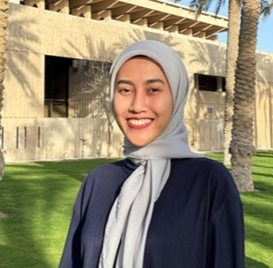
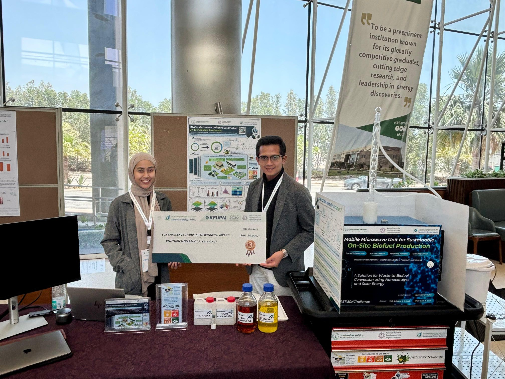
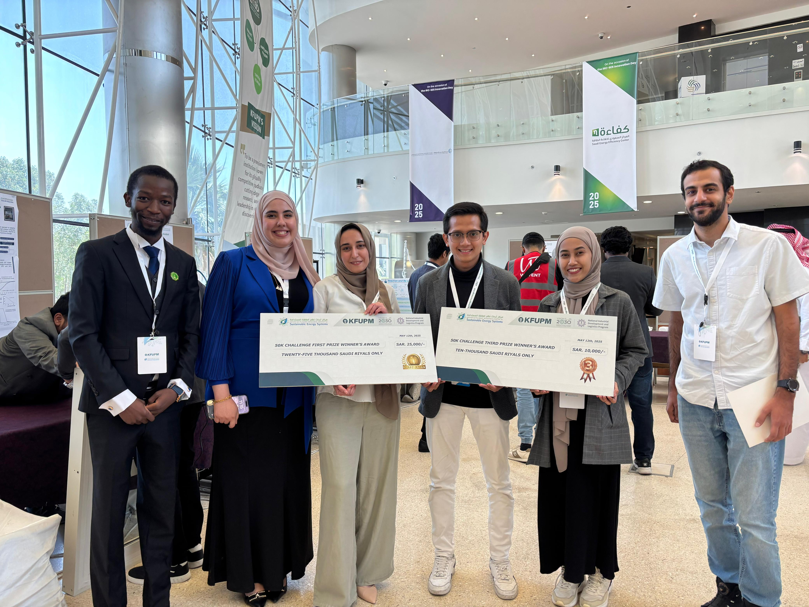
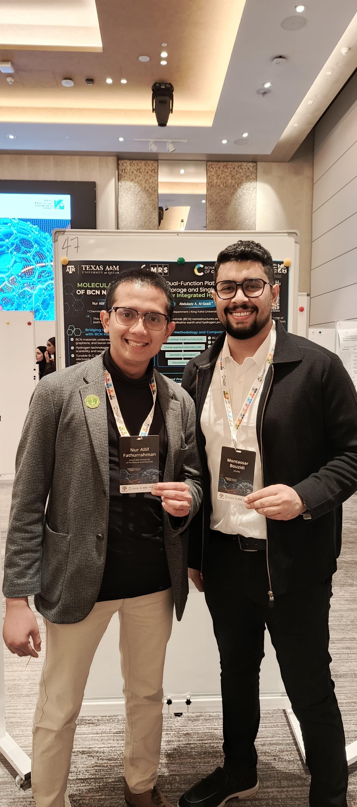
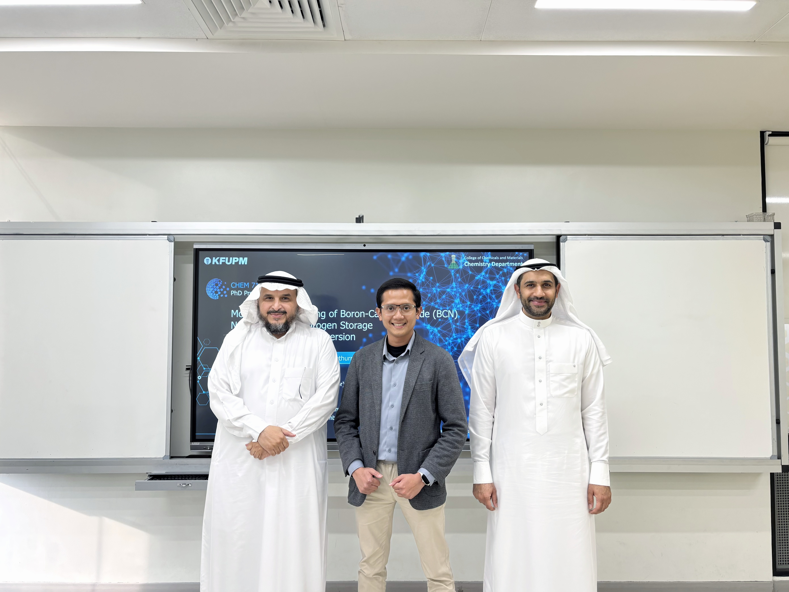

RESEARCH
Spectroscopy and Theory-guided Scientific Discovery


Spectroscopy and Theory-guided Scientific Discovery
From Molecular Insights to Functional Design
Collaborative Science for Sustainable Solutions
The Molecular Spectroscopy & Computational Chemistry (MSCC) group led by Prof. Abdulaziz A. Al-Saadi focuses on the rational design and fundamental understanding of new materials through an integrated combination of computational chemistry and molecular spectroscopy.
We design energy materials and catalysts using computational chemistry and molecular spectroscopy, linking structure to function through theory-guided modeling and vibrational spectroscopies.

Probing molecular fingerprints, surface interactions, and ultra-sensitive detection using vibrational spectroscopy and SERS.
Using quantum chemical calculations to understand stability, reactivity, charge transfer, adsorption, and reaction mechanisms.
Designing functional materials for catalysis, hydrogen storage, and energy applications.
The Molecular Spectroscopy & Computational Chemistry (MSCC) group led by Dr. Abdulaziz A. Al-Saadi focuses on the rational design and fundamental understanding of new materials through an integrated combination of computational chemistry and molecular spectroscopy. We pay attention to structure-property relationships that support theory-guided materials development and experimental interpretation.
Within computational catalysis, our group employs electronic-structure methods using a variety of software packages, including Gaussian, VASP, CASTEP, D-Mol3, Quantum Espresso, and others, to elucidate reaction mechanisms, adsorption behavior, and charge-transfer processes on catalytic materials.
Computational catalysis studies range from metal-based to metal-free systems, from zero- to three-dimensional materials, and from single- to multi-atom decorated structures, with a particular emphasis on structure-activity relationships. The group also investigates possible adsorption scenarios of these materials toward toxic gases and common environmental pollutants.
A major research direction involves in-silico materials design for energy applications, such as metal-ion batteries, hydrogen storage, and corrosion inhibitors. This area of research provides a framework for reciprocal validation between computational modeling and possible future laboratory studies.
The integration between theory and spectroscopy represents a core research area within our group. We maintain a strong focus on fundamental physical chemistry and spectroanalytical research, using mainly vibrational Infrared, Raman, SERS, and EC-SERS spectroscopic techniques to probe molecular interactions of organic dyes and bioactive compounds with nanostructured materials, facilitating ultra-sensitive detection and reliable spectral interpretation.
Journal of Molecular Graphics and Modelling, 109399 (2026)
Journal of Energy Storage 152, 120877 (2026)
Arabian Journal for Science and Engineering, 1-14 (2026)
Journal of Chromatography A, 466852 (2026)
Journal of Molecular Structure, 145719 (2026)
Surfaces and Interfaces, 108598 (2026)
Physical Chemistry Chemical Physics, Accepted (2026)
Micro and Nanostructures, 209 (2026) 208458
Inorganic Chemistry Communications, 181 (2025) 115253
Journal of Materials Chemistry B, 13 (2025) 6843
Spectrochimica Acta Part A, 336 (2025) 126055
Spectrochimica Acta Part A, 326 (2025) 125237
Journal of Molecular Liquids, 414 (2024) 126201
Physical Chemistry Chemical Physics, 26 (2024) 13955
Surfaces and Interfaces, 38 (2023) 102852
Fuel, 333 (2023) 126298







For collaboration, student inquiries, and research discussions.
Connect with our research and institution.